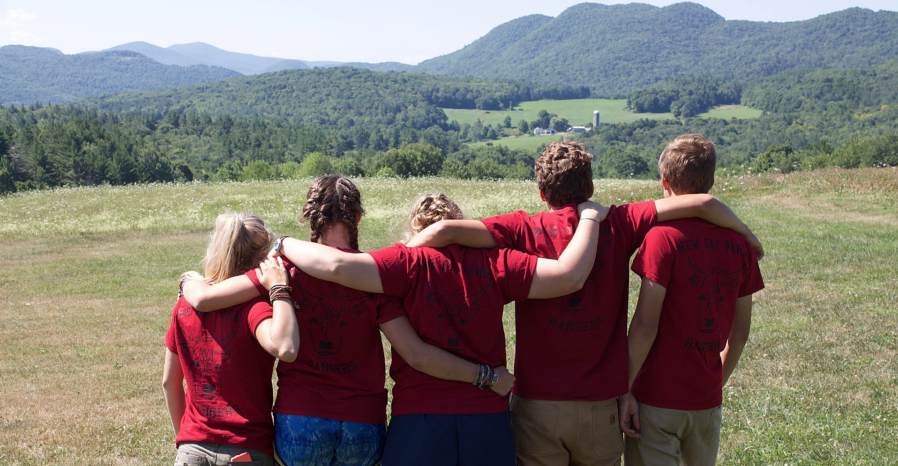
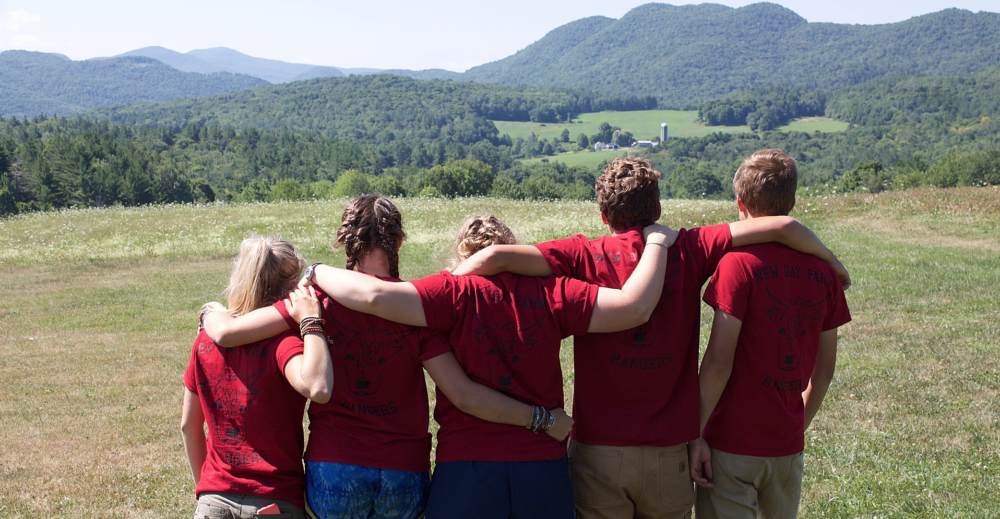

About Us Programs and Events Shop
New Day Farm sits on 570 pristine acres in tiny Ira, Vermont. Nestled between the Green Mountains and the Taconic Range, over 80% of our land is wild forest. Restored as a working farm in 2012, the farm has a 200 year history.
We have about forty acres devoted to collecting wild sap from the sugar maple trees on our beautiful, sloping woods, and another forty devoted to cattle. Our healthy, hardy herd of Scottish Highlanders have grazed over this same sweep of pastures and woods for over twenty years. We produce pure, single-source maple syrup, and grass-fed, peaceful, drug-free, delicious beef.
 

We bought this beautiful old farm because we fell in love with it and wanted to preserve its beauty and integrity. We named it “New Day Farm” both because of our vision and in honor of the Day family who cared for it for several generations. When you drive up to visit us, you will see the sign at the bottom of the drive still says “Days Rd".
We've raised two strong daughters and are now working to help our adopted piece of earth stand on its own into the future as a lasting, regenerative resource of beauty, nurture and inspiration.
We are lucky to have many helpful and talented people around us to further the aims of the farm. This is a big shout-out to John, Collin and Ed. We also have a growing alumni of enthusiastic and capable summer crews, self-described "New Day Farm Rangers".
New Day Farm sells certified organic products. Organic standards in the US require us to do no harm, regulating and providing guidelines for appropriate soil amendments, feeds and pest control. Most importantly, the organic movement has identified and gone a long way to prevent the use of many poisons on the land and water (such as industrial fertilizers, which were derived from the post-war surplus of explosives), through government regulation.
New Day Farm is proud to be a Demeter-certified Biodynamic® farm. The Biodynamic® approach considers the whole farm an individual entity. Soil and water conservation, composting and biodiversity of the whole farm guard the well-being of plants, insects, animals, and life. One aim of a Biodynamic farm is to minimize external inputs to the farm, creating its own fertility naturally, by cycling through proven natural practices and healing preparations to bring the farm forward to its own highest level of health and vitality.